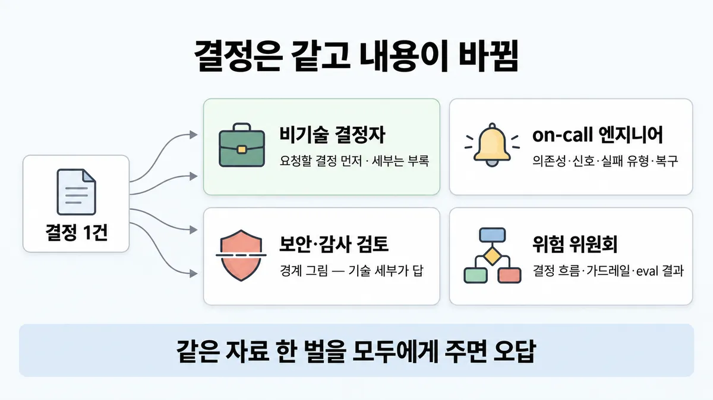
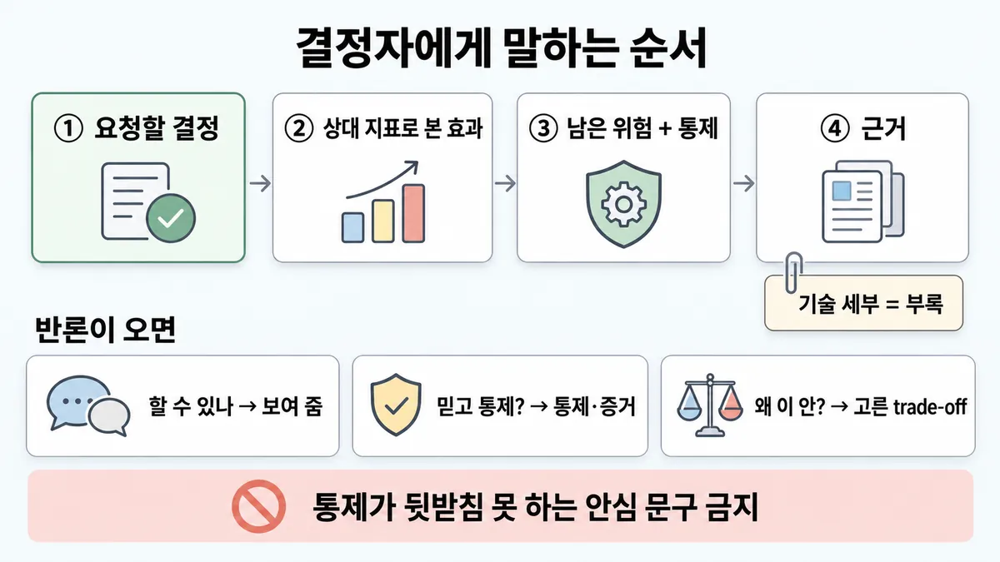
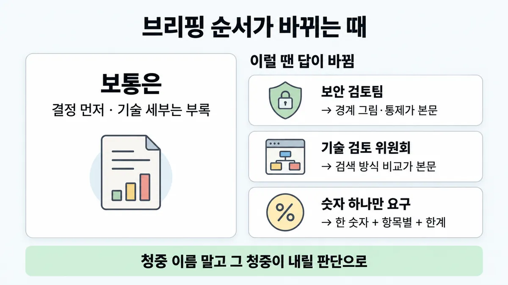

■ 청중별 브리핑
표시가 없는 문장은 공식 문서에서 확인한 내용이에요. 다른 표시는 읽는 법
왜 배우나 — 시험이 요구하는 것
시험 목표 6.2 결정과 절충 전달 · D6 사람·문서 14%Communicate architectural decisions and trade-offs
이 개념으로 푸는 판단 (할 수 있어야 하는 것)
- 6.2① 실행 가능한 설계가 둘 — 아키텍트가 골라 통보할까, 책임자가 고르게 할까? — 절충 전달 방식 (평가 근거 붙은 선택지 공개 → 책임자 결정)
한눈에
같은 결정도 듣는 사람마다 순서와 깊이를 바꿔 말한다. 결정은 같고 내용이 바뀐다. 비기술 결정자에게는 아래 순서로 말하고, 기술 세부는 부록에 둔다 업계 일반 공식 문서에 브리핑 규칙 없음
- 요청할 결정
- 상대가 이미 보는 지표로 나타낸 효과
- 남은 위험과 각 통제
- 근거
공식 근거는 목표 문구 수준이다. 가이드는 여러 부서 이해관계자(stakeholder)와 일하며 아키텍처 결정을 잘 전하는 것, 그리고 보안·법무·경영진 논의까지 이끄는 것을 적는다
선택지 표에 무엇을 넣나는 ■ trade-off 전달 에 있다. 사업 지표 목록은 ■ impact metrics 에 있다
비유 장애 보고와 같다. 경영진에게는 "영향 고객 수 · 복구 시각 · 재발 방지 결정 요청" 한 장을 준다. 온콜에게는 타임라인·원인·복구 명령을 준다. 보안팀에게는 어떤 데이터가 어디로 나갔나를 준다. 같은 장애로 세 문서를 쓴다. "포스트모템 40쪽을 전부에게 전달" 이 속이는 습관이다


ELI5
같은 소풍 계획을, 교장 선생님께는 "허락해 주세요 + 안전 대책" 으로, 버스 기사님께는 "길과 시간" 으로 말하는 거예요.
- 소풍은 하나인데, 듣는 사람마다 궁금한 게 달라요.
- 교장 선생님께 버스 노선도부터 보여 주면 "그래서 뭘 허락하라고?" 가 돼요.
- 버스 기사님께 "재밌을 거예요" 만 말하면 길을 못 찾아요.
- "비 오면 어떡하지" 는 숨기지 말고 먼저 말해야 믿어 줘요.
개념 설명
원리
결정은 같고 내용이 바뀐다
- 청중마다 다른 결정을 말하는 것이 아니다. 같은 결정을, 그 사람이 내릴 판단에 필요한 것만 골라 그 사람의 말로 전한다 (업계 일반).
- 비기술 결정자가 내릴 판단은 "승인할까" 다. 필요한 것은 셋이다. 무엇을 승인하나, 무엇이 좋아지나(그들이 이미 보는 숫자로), 무엇이 남는 위험이고 누가 막나다.
- 보안 검토가 내릴 판단은 "경계를 넘는 데이터가 안전한가" 다. 필요한 것은 경계 그림과 통제 증거다. 그래서 이 청중에게는 기술 세부가 곧 요약이다.
요약을 세부 앞에 둔다
- 가장 가까운 공식 원칙이 있다. 코드 리뷰 요약도 건수 한 줄로 열고 "사실 오류 없음" 부터 말한다. 읽는 사람은 세부보다 큰 그림을 먼저 알고 싶어 한다 (Claude Code 리뷰 문맥).
- 정보 양 원칙도 있다. 너무 적으면 판단하지 못하고, 너무 많으면 관련 없는 세부에 묻힌다 (에이전트 계획 공개 문맥).
숫자 하나(평균)는 조각의 낮은 값을 숨긴다
- 공식은 대부분 여러 성공 기준으로 다차원 평가를 하고, 오류의 무게도 기준으로 본다. 한 숫자로 줄이면 돈이 나가는 조각의 낮은 값이 평균에 묻힌다. 자세한 것은 뒤집히는 때 3 에 있다.
믿음은 한계를 먼저 말할 때 생긴다
- 무결점 데모나 안심 문구는 첫 오류 한 번에 신뢰를 다 잃는다. 한계를 의도된 범위로 먼저 말하면, 상대가 윗선을 설득할 근거가 된다 (업계 일반).
- 공식에 가까운 원칙이 있다. 자동 eval 도 실제 사용 모양과 안 맞으면 거짓 자신감을 준다.
규칙과 판단


갈림길
①② 누구에게 [6.2①]
결정 먼저
요청할 결정, 상대가 이미 보는 지표로 나타낸 효과, 남은 위험과 그에 맞춘 통제, 근거 순서로 말한다. 기술 세부는 부록에 둔다 업계 일반. 세부보다 큰 그림을 먼저 준다 (넓힌 건 해석)
운영 세부
의존성 · 신호 · 실패 유형 · 복구 단계를 준다 업계 일반. 자세한 것은 ■ 구현 가이드 에 있다
경계 그림
데이터·자격증명이 경계를 넘는 길을 그린다. 이 청중에게는 기술 세부가 답이다 업계 일반
결정 흐름 · 가드레일
결정 흐름 · 가드레일 · eval 결과를 준다. 시스템 프롬프트 원문은 부록에 둔다 업계 일반
③ "숫자 하나만" [6.2①] [4.1]
하나를 주되 유형별로
대부분은 여러 차원으로 잰다. 그래서 문의 유형별 숫자, 재는 법, 이 숫자로는 알 수 없는 것을 붙인다 업계 일반
종류별로
문의 종류별 오류율과 어떤 오류가 사업에 영향을 줬나로 옮긴다 업계 일반. 오류의 무게도 기준이다
④⑤ 반론이 오면 [6.2①]
보여 준다
상대의 워크플로·데이터(또는 실제에 가까운 대체 자료)로 데모한다. 한계 1~2개를 먼저 말한다 업계 일반
통제·증거
남은 위험마다 통제와 증거를 댄다 업계 일반. 통제가 뒷받침 못 하는 안심 문구는 쓰지 않는다
고른 trade-off
고른 trade-off 와 대안이 냈을 비용을 말한다 업계 일반. 자세한 것은 ■ trade-off 전달 에 있다
경계 + 대안
한 줄 "안 됨" 대신 경계 · 결정권자 · 규정 안에서 되는 대안을 말한다 업계 일반
흐름
그림 속 이름·금액·시간·토큰 수는 예시예요. 공식 한도·동작은 카드 본문 값이 기준.
장면 글로 보기
칸 : 아키텍트 → 위원회 → 보안 검토
질문 : 같은 자료를 둘 다에게 줘도 될까?
① 청중별 ✓
- 시작 : 아키텍트 — 쪽지 : 결정 1건 / 환불 초안 자동화 / 전 상담팀 확대
- 위원회에 : 아키텍트 → 위원회 : 요청할 결정과 상대의 지표를 먼저 준다 — 쪽지 : 요청: 확대 승인 / 처리 18분 → 11분 / 위험: 잘못 나간 환불 / 통제: 5만 원↑ 사람
- 보안에 : 아키텍트 → 보안 검토 : 이 청중에게는 기술 세부가 답이다 — 쪽지 : 주문 DB → Claude API / 카드번호 마스킹 / 키 = 비밀 저장소
- 끝 : 결정은 같고 내용이 바뀐다
② 같은 자료 한 벌 ≠
- 시작 : 아키텍트 — 쪽지 : 임베딩 비교표 / 시퀀스 다이어그램 / 프롬프트 시연
- 위원회에 : 아키텍트 → 위원회 : 기술 세부를 먼저 준다 — 말 : “그래서 무엇을 승인하라는 거죠?”
- 보안에 : 아키텍트 → 보안 검토 : 경계 그림이 없다 — 말 : “카드번호는 어디로 나가나요?”
- 끝 : 두 청중에게 같은 자료 한 벌을 줬다. 결정자는 요청을 못 찾고, 보안은 경계를 못 본다
규칙 원문 ①②③④⑤ (갈림길로 그린 규칙)
-
비기술 결정자 (스폰서·임원 위원회, 10~15분) : 아래 순서로 말한다 업계 일반 [6.2①]
- 요청할 결정
- 상대가 이미 보는 지표로 나타낸 효과(처리 시간 · 밀린 문의 · 잘못 나간 환불)
- 남은 위험과 각 통제
- 근거
기술 세부(검색 방식 비교 · 프롬프트 시연 · 벤치마크 · 구성 요소·시퀀스 다이어그램 · SDK 목록)는 부록에 둔다 업계 일반
가장 가까운 공식 원칙은 요약을 세부 앞에 두는 것이다. 리뷰 요약은 건수 한 줄로 열고, 사실 오류가 없으면 그 말부터 한다. 읽는 사람은 세부보다 큰 그림을 먼저 알고 싶어 한다 (Claude Code 리뷰 요약 문맥이다. 사람 브리핑으로 넓힌 것은 해석이다)
정보 양 : 너무 적으면 제대로 가는지 판단하지 못한다. 너무 많으면 관련 없는 세부에 묻힌다 (에이전트 계획 공개 문맥이다. 넓힌 것은 해석이다). 자세한 것은 ■ 과정 투명성 에 있다
통제가 뒷받침 못 하는 안심 문구("사인오프로 위험 제거")는 쓰지 않는다 업계 일반. 가장 앞선 모델도 때때로 틀린다. 자세한 것은 ◆ 100% 약속 vs 측정된 SLO + 사람 안전망 에 있다
-
청중이 바뀌면 내용이 바뀐다. 결정은 같다 업계 일반 [6.2①] [6.4]
청중 줄 것 부록으로 스폰서·위원회 요청할 결정 · 상대의 지표로 나타낸 효과 · 위험 + 통제 · 비용 구성 요소 그림 · 시스템 프롬프트 원문 on-call 엔지니어 의존성 · 신호 · 실패 유형 · 복구 단계 사업 효과 보안·감사 검토 데이터·자격증명이 경계를 넘는 길 그림 · 통제 증거 없다. 이 청중에게는 기술 세부가 답이다 위험 위원회 결정 흐름 · 가드레일 · eval 결과 시스템 프롬프트 원문 가이드는 보안·법무·경영진 논의를 이 역할의 일로 적는다. 청중별 내용은 업계 일반이다. 운영 세부는 ■ 구현 가이드 에 있다
두 청중에게 같은 자료 한 벌(ADR + 다이어그램)을 주는 것은 오답이다 업계 일반
-
"숫자 하나만" 요구 : 하나를 주되 아래를 붙인다 업계 일반 [6.2①] [4.1]
- 문의 유형별 숫자
- 재는 법
- 사람 검토 뒤 end-to-end(처음부터 끝까지) 결과
- 이 숫자로는 알 수 없는 것
공식 : 대부분은 여러 성공 기준(success criteria)으로 다차원 평가를 한다. 오류의 무게도 기준이다("오류의 90% 는 불편 수준"). 자세한 것은 ■ 성공 기준 에 있다
사업 쪽 숫자는 사업 영향 지표로 낸다. 자세한 것은 ■ impact metrics 에 있다
최고치 · 가중 평균 하나 · 공개 벤치마크 · "요약 불가" 는 답이 아니다 업계 일반
"가끔 틀린다" 는 불만은 문의 종류별 오류율과 어떤 오류가 사업에 영향을 줬나로 옮긴다 업계 일반
상대가 윗선을 다시 설득해야 하면 한계를 먼저 말해 그 근거를 쥐여 준다 업계 일반
eval 은 제품팀과 연구팀 사이 가장 넓은 소통 창구다. 그래서 숫자는 같은 과제 묶음에서 낸다 (해석이다. 자세한 것은 ■ trade-off 전달 · 규칙 ① 에 있다)
-
반론 3종 : 각 반론에는 그 반론의 말로 답한다 업계 일반 과정 고유 틀, 공식 문서에 없음 [6.2①]
- 할 수 있나? 능력을 묻는 반론이다. 시연으로 답한다
- 믿고 통제·증명할 수 있나? governance(관리·통제 체계)를 묻는 반론이다. 통제와 증거로 답한다
- 왜 이 안인가? 설계 선택을 묻는 반론이다. 고른 trade-off(절충)와 대안이 냈을 비용으로 답한다
믿음 쪽 반론에는 남은 위험마다 통제와 증거를 댄다 업계 일반
거절도 같은 틀을 쓴다. 한 줄 "안 됨" 대신 경계 · 결정권자 · 규정 안에서 되는 대안(승인된 경계 · 마스킹 · 좁힌 범위)을 말한다 업계 일반. 안전 요건은 선택지가 아니라 경계다. 자세한 것은 ■ trade-off 전달 · 규칙 ③ 에 있다
-
데모 : 상대의 다음 결정과 상대의 워크플로·데이터(또는 실제에 가까운 대체 자료)에 맞춘다. 한계 1~2개를 의도된 범위로 먼저 말한다. 기능 나열 · 화려한 연출 · 무결점 시연은 믿음을 못 만든다 업계 일반 [6.2①] [6.3]
가까운 공식 원칙 : 자동 eval 도 실제 사용 모양과 안 맞으면 거짓 자신감을 준다 (eval 문맥이다. 데모로 넓힌 것은 해석이다)
더 깊이 : 판단 규칙 · 상황 변수 (설명)
판단 규칙
| 조건 | 답 | 등급 | 근거 |
|---|---|---|---|
| 비기술 결정자(스폰서·임원 위원회)다 | 요청할 결정, 상대의 지표로 나타낸 효과, 남은 위험과 통제, 근거 순서로 말한다. 기술 세부는 부록에 둔다 | 업계 일반 | 공식 문장이 없다. 가장 가까운 원칙은 code-review "The author wants to know the shape of the work before the details." 이다(리뷰 요약 문맥) |
| 자료 양을 정한다 | 판단에 필요한 만큼 준다. 너무 적지도 많지도 않게 한다 | (에이전트 계획 공개 문맥 — 사람 브리핑으로 넓힌 건 해석) | safe-trustworthy-agents |
| on-call 엔지니어다 | 의존성 · 신호 · 실패 유형 · 복구 단계를 준다 | 업계 일반 | ■ 구현 가이드 |
| 보안·감사 검토다 | 데이터·자격증명이 경계를 넘는 길 그림과 통제 증거를 준다 | 업계 일반 | — |
| 이 역할이 이런 논의를 하나? | 한다. 보안·법무·경영진 논의까지 한다 | exam-guide.json (가이드 대상 수험자) | |
| "숫자 하나만" 을 요구한다 | 유형별 숫자, 재는 법, end-to-end 결과, 못 말하는 것을 붙인다 | 업계 일반 (다차원 원칙은 확인) | define-success en-full |
| 사업 쪽 숫자를 낸다 | 사업 영향 지표로 낸다 | customer-support-chat en-full · ■ impact metrics | |
| 반론이 온다 | 능력은 시연으로, 통제·증명은 통제·증거로, 설계 선택은 고른 trade-off 와 대안 비용으로 답한다 | 업계 일반 (과정 고유 틀) | — |
| 안 되는 요청이다 | 경계 · 결정권자 · 규정 안에서 되는 대안을 말한다 | 업계 일반 | — |
| 데모를 한다 | 상대 워크플로·데이터에 맞추고 한계를 먼저 말한다 | 업계 일반 (가까운 원칙 확인) | demystifying-evals "Can create false confidence if it doesn’t match real usage patterns" (eval 문맥) |
| 안심 문구를 쓰려 한다 | 통제가 뒷받침 못 하면 넣지 않는다 | 업계 일반 (모델 한계는 확인) | reduce-hallucinations |
상황 변수
| 변수 | 값 | 답 쪽 | 등급 | 근거 |
|---|---|---|---|---|
| 청중 | 임원·위험 위원회 | 결정을 먼저 말하고, 세부는 부록에 둔다 | 업계 일반 | 판단 규칙 1 |
| 청중 | 보안 사인오프 | 경계 그림과 기술 세부가 본문이다 | 업계 일반 | 뒤집히는 때 1 |
| 청중 | 기술 검토 위원회(CTO·아키텍처 검토) | 부록이 본문으로 올라온다 | 업계 일반 | 뒤집히는 때 2 |
| 시간 | 10~15분 | 결정 요청, 효과, 위험, 통제까지 말한다. 나머지는 부록에 둔다 | 업계 일반 | — |
| 요구 | "숫자 하나만" | 숫자 하나에 조각과 못 말하는 것을 붙인다 | 업계 일반 · 계산 | 뒤집히는 때 3 |
| 불만 | "가끔 틀린다" | 문의 종류별 오류율과 사업에 닿은 오류를 보인다 | 업계 일반 | — |
| 상대 사정 | 윗선을 다시 설득해야 한다 | 한계를 먼저 준다 | 업계 일반 | — |
| 요청 | 규정상 안 되는 것 | 경계, 담당자, 규정 안에서 되는 대안을 말한다 | 업계 일반 | ■ trade-off 전달 · 규칙 ③ |
연습 문제
아키텍트가 고객지원 Agent 의 환불 초안 자동화를 임원 위원회 10분 안건비기술 결정자으로 올린다. 위원회가 정할 것은 전 상담팀으로 넓힐지 하나요청할 결정다. 준비한 자료는 임베딩 비교표 · 시퀀스 다이어그램 · 프롬프트 시연 순서기술 세부 먼저이고, 팀은 "꼼꼼해 보이게 다 보여 주자"고 한다. 자료를 어떻게 고칠까?
시험 대비
함정
- 임원 안건을 검색 방식 비교 · 프롬프트 시연부터 시작하는 것은 함정이다. 요청할 결정을 먼저 말하고, 세부는 부록에 둔다 업계 일반
- "꼼꼼해 보이게 다 보여 주자" 는 함정이다. 너무 많으면 관련 없는 세부에 묻힌다 (넓힌 건 해석)
- "위원회와 보안팀에 같은 ADR + 다이어그램" 은 함정이다. 청중마다 내용을 바꾼다 업계 일반
- 반대쪽 함정도 있다. "보안 검토에도 요약 한 장만" 은 함정이다. 이 청중에게는 경계 그림과 기술 세부가 답이다 업계 일반
- "한 숫자만 달라" 에 가장 좋았던 주의 정확도나 전체 평균으로 답하는 것은 함정이다. 유형별 숫자, 재는 법, 못 말하는 것을 붙인다 업계 일반. 대부분은 다차원으로 잰다
- "승인받기 쉽게 한계는 빼고" 는 함정이다. 한계를 먼저 말한다 업계 일반
- "사인오프하면 위험이 사라진다" 식 안심은 함정이다. 통제가 뒷받침 못 하는 문구는 쓰지 않는다 업계 일반. 가장 앞선 모델도 때때로 틀린다
- "규정상 안 됩니다" 한 줄은 함정이다. 경계 · 결정권자 · 규정 안에서 되는 대안을 말한다 업계 일반
- 데모를 기능 나열이나 무결점 시연으로 하는 것은 함정이다. 상대 워크플로에 맞추고 한계를 먼저 말한다 업계 일반
신호
"Collaborate with cross-functional stakeholders and communicate architectural decisions effectively" (가이드 2절)
"including discussions of security, legal, and executive considerations." (가이드 대상 수험자)
"Communicate architectural decisions and trade-offs" (가이드 목표 6.2)
"The author wants to know the shape of the work before the details." (Claude Code 리뷰 요약)
"Too little information leaves humans unable to assess whether the agent is on track to achieve its goal. Too much can overwhelm them with irrelevant details."
"Most use cases need multidimensional evaluation along several success criteria."
"Here are criteria and benchmarks that can be used to evaluate the business impact of employing Claude for support:"
"Can create false confidence if it doesn’t match real usage patterns"


더 깊이 : 뒤집히는 때 · 오답 재료 (설명)
뒤집히는 때
1. 보안 사인오프에는 기술 세부가 요약이다
- 조건 : 청중이 보안 검토팀이다. 판단할 것은 "카드번호·주문 정보가 경계를 넘어도 되나" 다.
- 판단 : "세부는 부록" 을 그대로 쓰면 오답이다. 이 청중이 판단할 대상이 바로 경계 그림·통제라서 그것이 본문이다. 반대로 사업 효과(처리 시간)는 부록이다.
- 등급 : 업계 일반
2. 기술 검토 위원회는 비기술 결정자가 아니다
- 조건 : "위원회" 라도 CTO·아키텍처 검토 위원회다. 판단할 것은 설계가 맞는가다.
- 판단 : 검색 방식 비교 · 시퀀스 다이어그램이 본문으로 올라온다. "위원회 = 요약 한 장" 으로 외우면 틀린다. 청중 이름이 아니라 그 청중이 내릴 판단으로 구분한다.
- 등급 : 업계 일반
3. 평균 94% 가 숨기는 81%
- 조건 : 위원회가 "정확도 숫자 하나만" 을 요구한다. 문의 비중과 유형별 정확도는 아래와 같다.
- 배송 : 비중 70%, 정확도 97%
- 반품 : 비중 20%, 정확도 90%
- 환불 : 비중 10%, 정확도 81%
- 계산 : 가중 평균 = 0.7 × 97 + 0.2 × 90 + 0.1 × 81 = 67.9 + 18.0 + 8.1 = 94.0% 다. 돈이 나가는 환불 조각은 81% 다. 다섯 건 중 약 한 건이 틀린다.
- 전제 : 비중·정확도는 예시다. 사람 검토 전 값이다.
- 등급 : 계산 (다차원 평가 원칙은 확인)
- 근거 : define-success en-full
- 판단 : 94% 한 줄만 주면 위원회는 환불까지 넓혀도 된다고 읽는다. 그래서 "94% (환불 81%, 5만 원 넘는 환불은 사람 확인 뒤 end-to-end 결과 따로)" 처럼 준다. 한 숫자에 조각과 못 말하는 것을 붙인다.
4. 한계를 먼저 말하는 게 불리해 보일 때
- 조건 : 스폰서가 이사회에 다시 올려야 한다. 팀은 "승인받기 쉽게 한계는 빼자" 고 한다.
- 판단 : 한계를 빼면 이사회 질문에 스폰서가 답을 못 한다. 그러면 다음 승인에서 신뢰를 잃는다. 한계 1~2개를 의도된 범위("환불은 초안까지, 확정은 사람")로 먼저 주면 스폰서에게 근거를 쥐여 준다.
- 등급 : 업계 일반
오답 재료
| 오답 | 왜 끌리나 | 왜 틀리나 | 등급 | 근거 |
|---|---|---|---|---|
| 임원 안건을 검색 방식 비교 · 프롬프트 시연부터 | 기술 깊이가 신뢰를 준다고 본다 | 요청할 결정을 못 찾는다. 결정을 먼저 말하고, 세부는 부록에 둔다 | 업계 일반 | — |
| "꼼꼼해 보이게 다 보여 주자" | 빠짐없어 보인다 | 너무 많으면 관련 없는 세부에 묻힌다 | (넓힌 건 해석) | safe-trustworthy-agents |
| 위원회와 보안팀에 같은 ADR + 다이어그램 | 한 벌이면 일관된다 | 결정은 같고 내용이 바뀐다. 두 청중 모두 판단할 재료를 못 받는다 | 업계 일반 | — |
| 반대 함정 : "보안 검토에도 요약 한 장" | "세부는 부록" 을 외웠다 | 이 청중에게는 경계 그림이 본문이다 | 업계 일반 | 뒤집히는 때 1 |
| "한 숫자만" 에 가장 좋았던 주의 정확도 · "가중 평균 하나" | 요구대로 해 준다 | 조각의 낮은 값이 묻힌다 | 계산 · 확인(다차원) | 뒤집히는 때 3 · define-success en-full |
| "요약할 수 없다고 거절" | 정직해 보인다 | 하나를 주되 조각·못 말하는 것을 붙이면 된다 | 업계 일반 | — |
| "사인오프하면 위험이 사라진다" | 결정자를 안심시킨다 | 통제가 뒷받침 못 하는 문구다. 가장 앞선 모델도 때때로 틀린다 | 업계 일반 | reduce-hallucinations |
| "규정상 안 됩니다" 한 줄 | 규정이 분명하다 | 경계 · 결정권자 · 규정 안에서 되는 대안을 같이 말한다 | 업계 일반 | — |
| 무결점 데모 · 기능 나열 | 인상이 좋다 | 첫 오류에 신뢰를 잃는다. 상대 워크플로에 맞추고 한계를 먼저 말한다 | 업계 일반 | demystifying-evals(eval 문맥, 해석) |
| "어느 설계가 나은지 모델에게 판단을 맡긴다고 설명" | AI 시스템이니 AI 에게 맡길 것 같다 | 설계 판단은 책임자가 한다. 자세한 것은 ■ trade-off 전달 에 있다 | 업계 일반 | ■ trade-off 전달 오답 재료 |
참고
더 깊이 : 출처 · 상태 · 미해결 (참고)
출처
- 가이드 목표 6.2 공식 시험 가이드 v1.0
- 가이드 2절·대상 (exam-guide.json)
- Claude Code code-review
- safe-trustworthy-agents
- define-success
- customer-support-chat
- demystifying-evals
- reduce-hallucinations
상태
- 업계 일반 대부분 (브리핑 순서 · 부록 · 청중별 표 · 안심 문구 · 유형별 숫자 · 한계 먼저 · 반론 3종 — 과정 고유 틀 · 거절 틀 · 데모 규칙 — 9가지)
- 해석 4곳(리뷰 요약 · 계획 공개 · eval 소통 창구 · eval 거짓 자신감 → 사람 브리핑·데모)
미해결
- 공식 근거를 못 찾은 규칙은 아홉 가지다. 브리핑 순서(결정, 지표, 위험과 통제, 근거) · 부록 규칙 · 청중별 내용 표 · 안심 문구 금지 · 유형별 숫자가 다섯이다. 한계 먼저 · 반론 3종(과정 고유 틀) · 거절 틀 · 데모 규칙이 나머지 넷이다. 검색어 앞부분은
executive·non-technical·leadership·audience·jargon·plain language였다. 뒷부분은communicat·summary first|lead with|bottom line|key findings·demo·single number|one number였다. 범위는ccarp/raw/official-docs/en-*.md·ccarp/raw/skilljar/*.md·exam-guide.json이다. 제외는 받지 않은 문서·ko 판이다. D6 뜻은 가이드 목표 문구뿐이었다. - 이 카드의 ✓ 줄은 대부분 다른 문맥의 원칙(리뷰 요약 · 에이전트 계획 공개 · eval)을 사람 브리핑으로 넓힌 해석이다. 시험 키가 이 상식을 쓰는지는 모른다. 그래서 이 카드만 근거로 답을 고르지 않는다.
- 후보 절 공식 근거 5줄은 모두 그 줄에 있었다. exam-guide.json · customer-support-chat en-full · safe-trustworthy-agents · demystifying-evals이다. 추가로 찾아 쓴 줄은 code-review · define-success en-full · demystifying-evals · reduce-hallucinations이다.
- 가이드 원문 PDF 의 절 번호 : 목적 7항목을 "2절" 로 적었다(■ lifecycle 루프 의 "2절 full lifecycle" 표기와 맞췄다). 대상 수험자의 절 번호는 확인하지 못했다. json 만 봤다.
- Skilljar 는 이번에 보지 않았다.
ccarp/raw/skilljar를 위 검색어로 찾은 결과 브리핑 주제가 없었다 (제외 = 받지 않은 과정·강의).